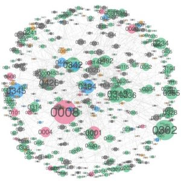

News
- 【2019/5/18】PyCon Kyushu in Okinawa 2019に登壇します（アイデアを小さく始めて、小さく育てていく方法 ～ ハッカソンで深層学習モデルを作って運用するまで)
- 【2019/4/24】Scipy Japan 2019に登壇しました（Let's Enjoy the Python World Using Network Analysis ~ Overlooking the reference relationship of PEPs with NetworkX)
- 【2018/9/17】PyConJP 2018に登壇しました（Interactive Network Visualization using Python 〜 NetworkX + BokehでPEPの参照関係を可視化する）
- 【2018/9/1】CodeZineで記事になりました（CodeZine 「PyCon JP 2018 ひろがるPython」登壇者座談会 ～わたしのPythonのひろげかた～）
Projects (業務外の個人プロジェクト)
OheyaObeya (2019〜)
- AIで汚部屋を何とかするプロジェクト -
Keywords: Deep Learning, Image Classification, Object Detection, Keras, Azure
PEP Map (2018〜)
- PEP (Python Enhancement Proposal)の参照関係ネットワークを可視化するプロジェクト -
Keywords: Python, NetworkX, Bokeh, Network Analytics, PEP
経歴
- 2011年4月〜2019/3月 とあるメーカーのソフトウエア開発会社に勤務
- 医療画像情報システムの設計/実装（1〜3人程度の小規模チームにおけるObjective-CによるiOSネイティブアプリ開発やC#によるサーバサイド開発など）の後、 部門横断組織にてPythonを使用したデータ活用(PoC開発など)案件や深層学習案件に従事。
- 2011年3月 筑波大学 システム情報工学研究科 コンピュータサイエンス専攻 博士前期課程卒業【修士（工学）】
- 2009年3月 筑波大学 第三学群情報学類卒業 (知能情報メディア主専攻）【学士（情報工学）】
- 2005年3月 熊本県立熊本高等学校卒業
メディア・報道
発表資料
Talk
- Let's Enjoy the Python World Using Network Analysis ~ Overlooking the reference relationship of PEPs with NetworkX (25min) @SciPy Japan 2019 (2019/4/24)
- [ハッカソンプレゼン] 暮らしを診る眼 OheyaObeya 〜 AIで汚部屋を何とかするプロジェクト (10min) @FFS Hackathon 2018 (2019/2/28)
- Interactive Network Visualization using Python 〜 NetworkX + BokehでPEPの参照関係を可視化する (25min) @PyConJP 2018 (2018/9/17)
LT
- ハッカソンで深層学習使って汚部屋警報作った話 (10min) @ JDLA(日本ディープラーニング協会) meetup tokyo #1 (2019/05/10)
- 私がPythonに入学した理由〜アイデアを小さくはじめて小さく育てていく方法 (10min) @PyLadies Tokyo Meetup #40 Python入学式 (2019/04/13)
- NetworkXではじめる情報構造化 たくさんのドキュメントの全体像を俯瞰する (15min) @BPStudy#135〜エンジニアの知的生産術 (2018/11/29)
- 脈拍と共に振り返るPyConJP 2018 発表当日のFitbitデータを可視化する (5min) @PyLadies Tokyo - 4周年記念パーティ (2018/10/08)
- 入学したあと何をする？ Pythonライブラリの活かし方 (5min) @PyLadies Tokyo Meetup #31 Python入学式 (2018/04/22)
- PyCon JPに触発されて文章自動生成やってみた 〜マルコフ連鎖とLSTMで楽しむ谷山浩子の世界〜 (5min) @PyLadies Tokyo - 3周年記念パーティ (2017/10/15)